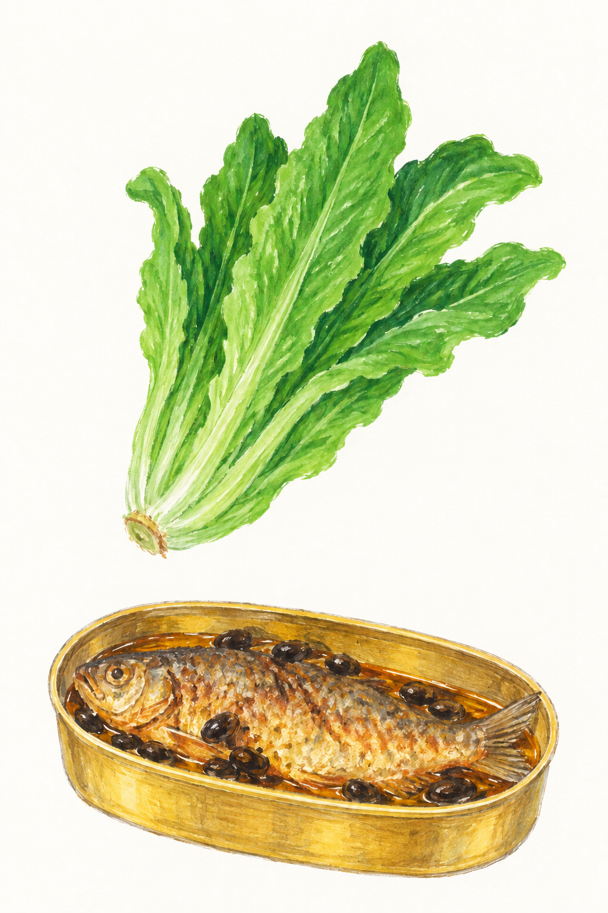

<!doctype html><html lang="zh"><meta charset="utf-8"><meta name="viewport" content="width=device-width,initial-scale=1"><title>油麦遇上鲮鱼 · hiJessie</title><style>
@font-face{font-family:Jessie;src:url('assets/hijessie-patched.woff')}@font-face{font-family:WenKai;src:url('assets/wenkai-labels.woff')}*{box-sizing:border-box}body{margin:0;background:#e6e4df;display:grid;place-items:center;padding:24px}main{position:relative;width:min(100%,640px);container-type:inline-size;background:#fffdf8;box-shadow:0 8px 24px #0001}img{display:block;width:100%}.label{position:absolute;margin:0;color:#dc6255;font-family:Jessie,WenKai,serif;font-weight:400;line-height:1.35;white-space:nowrap}.label span{display:block;font-size:.72em;margin-top:.13em}.title{left:7%;top:2%;font-size:6cqw;transform:rotate(-2deg)}.lettuce{left:64%;top:45%;font-size:5.3cqw;transform:rotate(2deg)}.fish{left:63%;top:59.8%;font-size:5.3cqw;transform:rotate(-2deg)}.fish span{font-size:.65em}.lettuce span{font-size:.65em}
</style><main><h1 class="label title">油麦遇上鲮鱼<span>Dace Meets Greens</span></h1><p class="label lettuce">油麦菜<span>Chinese lettuce</span></p><p class="label fish">豆豉鲮鱼<span>Dace &amp; black beans</span></p></main></html>
<script>if(location.search.includes('panel')){document.body.style.padding='0';document.querySelector('main').style.boxShadow='none';document.querySelector('main').style.width='100%';}</script><style>html:has(body.panel),body.panel{margin:0;padding:0;overflow:hidden;height:100%}body.panel main{min-height:100vh;width:100%;max-width:none}</style><script>if(window.self!==window.top)document.body.classList.add('panel');</script>